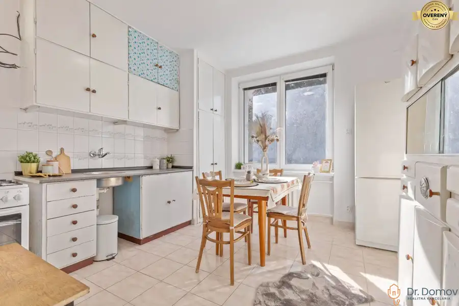
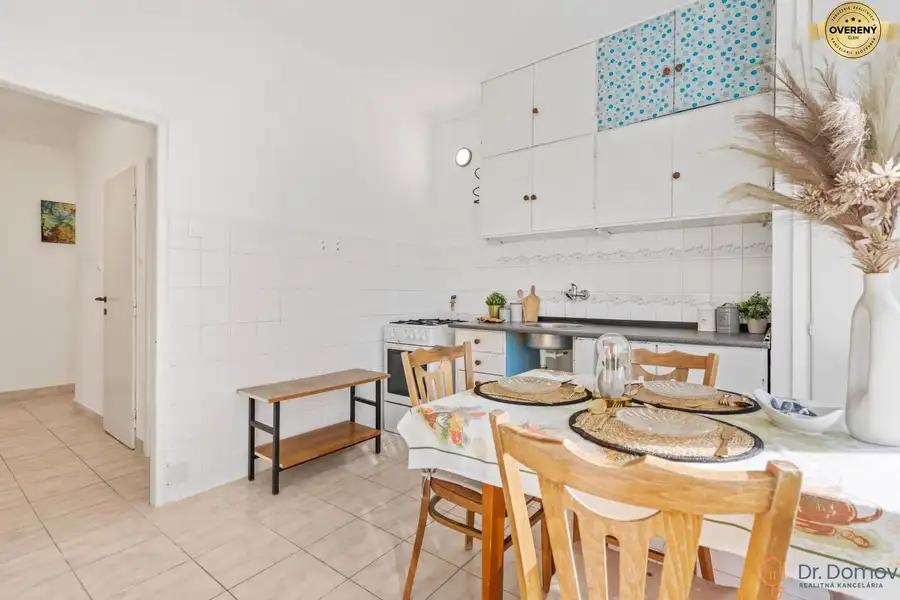
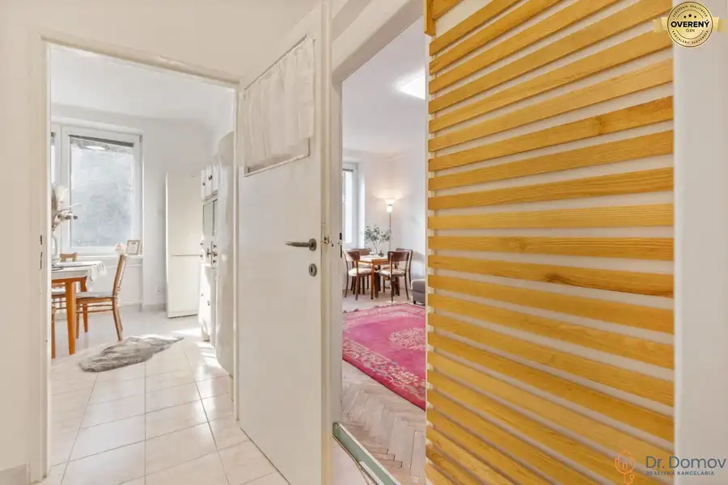
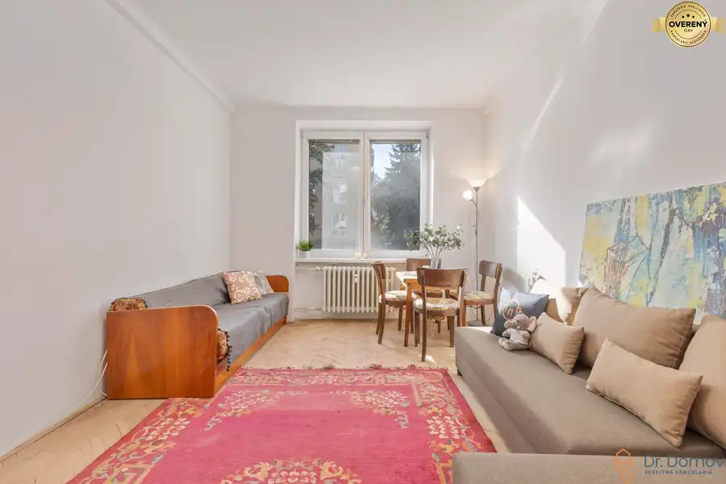
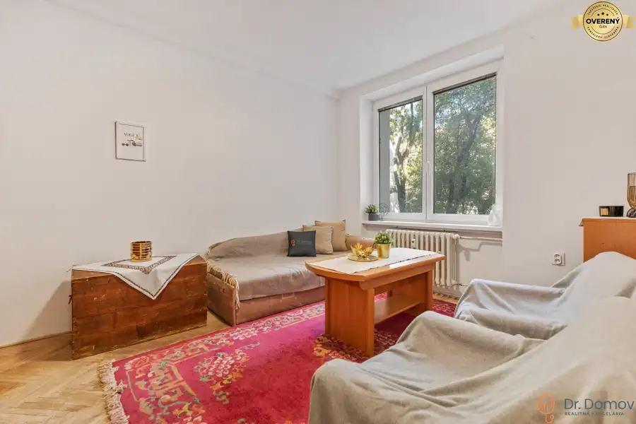
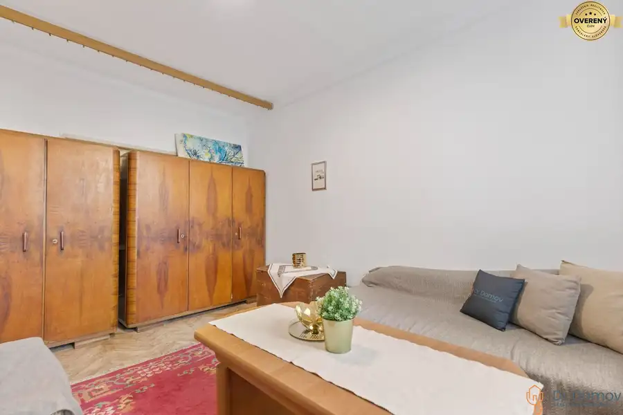
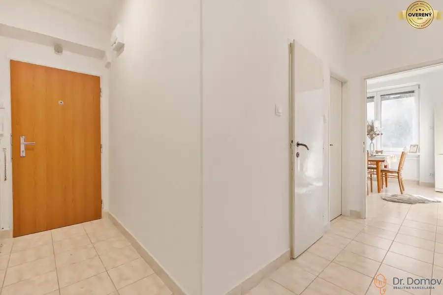
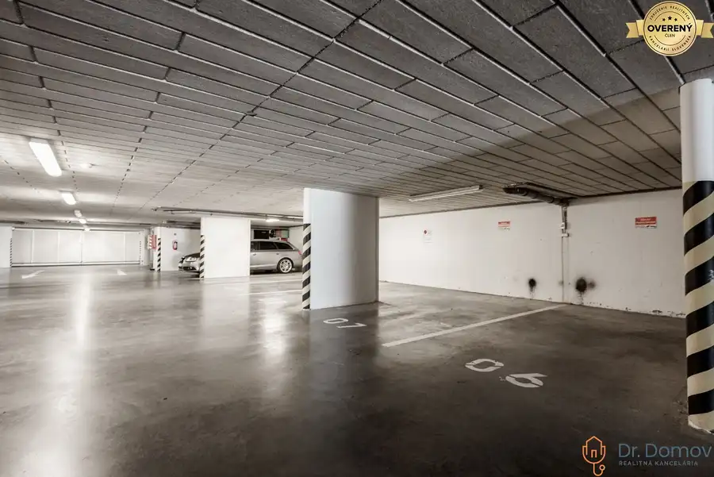
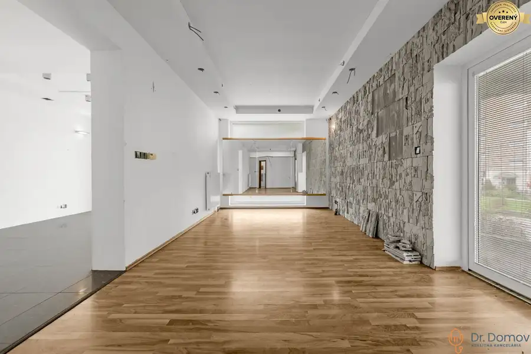
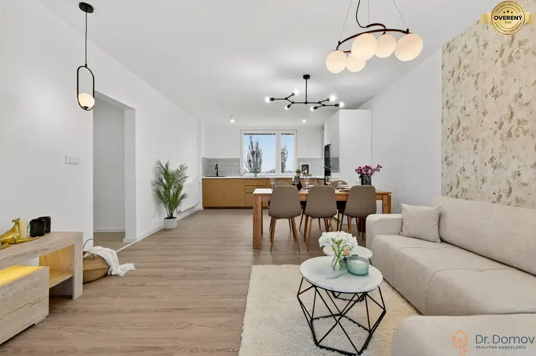

NA PRENÁJOM 2-IZB. BYT V 500 BYTOCH, PÔVODNÝ STAV, AZOVSKÁ, BRATISLAVA
Ružinov, Bratislava







- Dispozícia2-izbový
- Plocha59.55 m²
- Poschodie1. z 4
- Stavpôvodný
- Vlastníctvoosobné
O nehnuteľnosti
Dr. Domov ponúka na prenájom slnečný 2-izbový byt so staromestskou atmosférou na jednej z najlepších adries na Nivách v bratislavskej mestskej časti Ružinov – na ulici Azovská. Je situovaný na 1. poschodí v 4-poschodovom kompletne zrenovovanom tehlovom dome bez výťahu a s menším počtom susedov. Je vhodný pre jednotlivca alebo pár. VOĽNÝ IHNEĎ.
Byt je v pôvodnom no v udržiavanom obývateľnom stave. V roku 2023 sa rekonštruovala elektroinštalácia v celom byte a nachádza sa tu murovaná kúpeľňa s vaňou a plastové okná. Dispozične pozostáva z priestrannej vstupnej chodby s úložným priestorom, 1. izby oproti vstupu taktiež s úložným priestorom a zariadením, 2. izby/spálne, kúpeľne s vaňou, oddelenej toalety a z kuchyne. Kuchyňa disponuje staršou kuchynskou linkou s umývadlovým drezom, plynovým sporákom s rúrou, mikrovlnnou rúrou, novou chladničkou a práčkou. Byt je orientovaný na dve svetové strany – Juhozápad a Severovýchod. Ponúka príjemné a mestské výhľady na okolie s blízkosťou centra mesta a novo vybudovaného downtownu.
Nehnuteľnosť sa prenajíma kompletne zariadená, ako môžete vidieť na fotografiách v inzeráte. V druhej izbe sa nachádza nová manželská posteľ.
Bytový dom je po celkovej rekonštrukcii z augusta roku 2022– zateplený z oboch strán, strecha po rekonštrukcii, nový bezpečný vstup na čip, nové schránky a udržiavané, čisté spoločné priestory. V bytovom dome sa nenachádza výťah.
ZÁKLADNÉ ÚDAJE:
* lokalita: ulica Azovská; Bratislava – Nivy (500 bytov)
* poschodie: 1/4
* stav: pôvodný stav
* podlahy: dlažba a drevené pôvodné parkety
* jadro: murované
* okná: plastové
* počet izieb: 2
* úžitková plocha bytu: 59,55 m²
* orientácia: na dve svetové strany – Juhozápad a Severovýchod
* vybavenie: byt sa prenajíma kompletne zariadený
* parkovanie pre rezidentov aj nerezidentov (PAAS)
* výborná lokalita v centre
* ihneď k nasťahovaniu
LOKALITA A OKOLIE:
Byt a bytový dom sa nachádzajú v jednej z najlepších adries v lokalite 500 bytov na Nivách v mestskej časti Ružinov - Bratislava II na prelome starého mesta a nového downtownu. V okolí nájdeme kompletnú občiansku vybavenosť – v bezprostrednej blízkosti nájdeme nákupné centrum Nivy a Autobusovú stanicu Nivy, krásnu zrekonštruovanú starú Pradiareň 1900 a novú štvrť Zwirn s mnohými službami a krásnym prostredím, parky, Športový areál, Dulovo Námestie, veterinárnu ambulanciu, materskú školu, reštaurácie, bary a známe kaviarne lokálneho charakteru – MINT, Jovipoint, Bistro St. Germain a mnohé ďalšie. Neďaleko sa nachádza dostatok zelene na prechádzky. Lokalita zabezpečí pohodlné a bezproblémové dopravné napojenie autom aj mestskou hromadnou dopravou. Zastávky MHD na dva smery sú vzdialené do 2 minút chôdze - linky č. 50, 60, N61 a ďalšie spoje od autobusovej stanice, linky č. 42, 70, 72. Obchodné centrum Nivy je vzdialené len pár minút chôdze.
POHĽAD MAKLÉRA:
Ak hľadáte staromestské bývanie spojené s modernou a prestížnou lokalitou, kompletne zariadený byt s duchom Starého mesta a najlepšiu občiansku vybavenosť, ste na najlepšej adrese. Lokalita, ktorú medzi Bratislavčanmi pozná každý, a ktorá si vyznačuje svoju prestíž sama, to je lokalita 500 bytov, v ktorej sa nehnuteľnosť nachádza. Veľkými výhodami sú priestranné metre štvorcové bytu, dve svetové strany zabezpečujúce plnohodnotné vetranie, lokalita, lokalita a lokalita. Neváhajte si dohodnúť obhliadku a presvedčte sa sami.
Odporúčam vidieť!
CENA: 800,-EUR/mesiac vrátane energií /600,-EUR nájom + 200,-EUR energie
V cene je zahrnuté vypracovanie nájomných zmlúv advokátskou kanceláriou, preberacích protokolov s protokolárnym odovzdaním nehnuteľnosti.
Pri podpise Nájomnej zmluvy sa platí jedno mesačné nájomné, vratná kaucia (depozit) vo výške jednomesačného nájmu a provízia pre RK.
Teším sa na naše stretnutie!
© Text a fotografie sú autorským dielom a majetkom realitnej kancelárie Dr. Domov
Parametre
- Úžitková plocha
- 59.55 m²
- Poschodie
- 1/vyššie poschodie
- Počet poschodí
- 4
- Počet izieb
- 2
- Vlastníctvo
- osobné
- Stav
- pôvodný
- Status
- aktívne
- Odvoz odpadu
- áno - separovaný
- Plyn
- áno
- Kúpeľňa
- vaňa
- Vykurovanie
- spoločné
- Výťah
- nie
- Parkovanie
- verejné
- Postavené z
- tehla
- Zariadenie
- zariadený
- Zateplený objekt
- áno
- Predzáhradka
- nie
- Bezbariérový prístup
- nie
- Okná
- plastové
- Orientácia
- juhozápadná
- Dátum zverejnenia
- 2026-05-25
Kde to je
Mohlo by Vás zaujímať

OstatnéNové 22 000 €NA PREDAJ GARÁŽOVÉ STÁTIA V PODZEMNEJ GARÁŽI V PROJEKTE NOVÉ ŠUTY – BA Vajnory, Bratislava
Nebytové priestoryNové 160 000 €NA PREDAJ NEBYTOVÉ PRIESTORY NA KRESÁNKOVEJ ULICI V BRATISLAVE Karlova Ves, Bratislava 78.65 m²
BytNové 284 990 €REZERVOVANÉ! ŠTÝLOVÝ A VEĽKÝ 3-IZBOVÝ BYT, KOMPLETNÁ REK., LAMAČ - BA Lamač, Bratislava 3-izbový77 m²4. podlažie